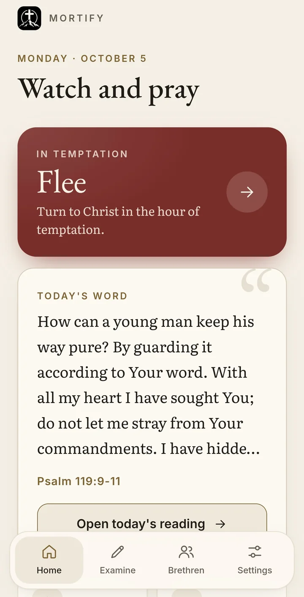
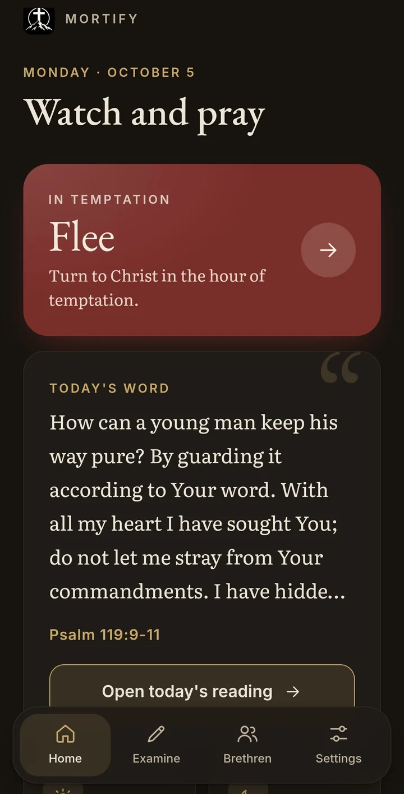

Begin
Open Mortify
Mortify
Open it on your phone and add it to your home screen. Then it opens like an app.
- Works on
- Any phone or computer with a current web browser. It is made for the phone.
- Install
- Add it to your home screen from the browser. There is nothing to get from an app store.
- Account
- Needed. You sign in with a code sent to your email, with no password to remember.
- Price
- Free
- Privacy
- No ads, no analytics, and no tracking. Your journal and confessions are encrypted with your PIN.
- For
- Adults, eighteen and older
- Scripture
- The Berean Standard Bible, all of it, inside the app
- Made by
- Colt, who writes this site. Published by gentleking.org.
- Address
- mortify.gentleking.org
What it is
Help to Put Sin to Death by the Spirit
Mortify is a quiet help for the daily work every Christian is called to. It follows John Owen’s Of the Mortification of Sin in Believers, and it keeps sending you back to Christ, to his Word and prayer, to the Lord’s Day, and to his people in your church.
For if ye live after the flesh, ye shall die: but if ye through the Spirit do mortify the deeds of the body, ye shall live.
Romans 8:13 (KJV)
It begins with grace, not with effort. Before it asks you anything about your sin, it sets out the gospel, and it says plainly, “You do not put sin to death to make God love you. You put sin to death because in Christ he already loves you.”


Flee
In the Hour of Temptation
The first thing on its home page is Flee. Press it when temptation comes, and it takes you through five steps.
- Attend to the Word. A verse for the sin you are fighting.
- Receive counsel. Most often a few lines from one of the Puritans, who knew this fight well, and now and then a word of Scripture.
- Turn to prayer. A prayer for this sin, to pray then and there.
- Ask your brethren to pray. One press asks the brethren in your circle to pray for you, or you can call any of them who has shared a phone number. If you have no circle yet, it tells you to call someone you trust.
- Now get up and go. Something plain to do right now. For lust at a screen, it might tell you to put the phone in another room, or to get up and go where people are.
Then it asks, Did you stand firm? If the answer is not yet, it does not leave you there. It offers another prayer, a way to ask your brethren again if you have linked with any, and the way back if you have fallen.
Flee opens without your PIN, so nothing stands between you and help. If you ask for prayer with no signal, the request waits on your phone and goes to your brethren when you are back online. For despair, and for drink and drugs, it shows a number to call before anything else.
Flee also youthful lusts: but follow righteousness, faith, charity, peace, with them that call on the Lord out of a pure heart.
2 Timothy 2:22 (KJV)
I have fallen
When You Have Fallen
Beside Flee is I have fallen. It does not scold you or count the days since. It walks you back to Christ.
There are five steps, Return to Christ, Confession, Seek the care of brethren, A short look back, and Rest in Christ. You can write a private confession. It is encrypted on your phone before it is saved, and no one but you can read it. If you choose, your brethren can be told plainly that you fell and confessed, with none of what you wrote.
Confess your faults one to another, and pray one for another, that ye may be healed. The effectual fervent prayer of a righteous man availeth much.
James 5:16 (KJV)
Every day
Morning and Evening
The fight is not only won in the hour of temptation. It is won in the ordinary days around it, so Mortify gives you a morning and an evening.
The morning reading
At a time you choose, there is a passage of Scripture, the next question of the Westminster Shorter Catechism, a word of counsel, a chapter for the sin you are fighting, and the chapter of Proverbs for the day of the month. There are sermons to hear as well, which open on SermonAudio. On Saturday it helps you prepare for the Lord’s Day. On Sunday it tells you to put the app down and spend the day with the Lord and his people.
The evening examination
At night there is a psalm, a verse, a word of counsel, and three honest questions about the day. You can mark what lay under a temptation, such as weariness, self-pity, or pride, and where it found you, such as alone, at night, or at a screen. You can write a private examination, and at any time you can look back over what you marked in the past week and see the patterns.
The whole Bible
The Berean Standard Bible is inside the app, every book and chapter. Every verse in the readings and in Flee opens its chapter.
Your battles
Fifteen Sins by Name
When you begin, you choose the sins you are fighting. Each has its own Scripture, counsel, prayers, questions for the evening, and plain things to do in the hour of temptation.
- Lust and pornography
- Anger
- Bitterness and an unforgiving heart
- Pride
- Envy
- Fear of man
- Covetousness and the love of money
- Discontent and grumbling
- Worry and unbelief
- Despair
- Drunkenness and drugs
- Gluttony
- Sins of the tongue
- Lying and deceit
- Sloth and wasted time
The counsel comes from Thomas Watson, John Owen, William Gurnall, Richard Sibbes, Thomas Brooks, and John Bunyan. Some of the prayers are Matthew Henry’s, from his Method for Prayer, and every prayer opens in adoration and closes in praise.
Brethren
A Few Brethren From Your Church
God did not mean for you to fight alone. If you choose, you can link with up to eight believers you already know, best of all from your own church.
Bear ye one another’s burdens, and so fulfil the law of Christ.
Galatians 6:2 (KJV)
Brothers link with brothers, and sisters with sisters. There is no public feed and no search for strangers. You give your private code to someone you trust, and they ask to link with you.
You choose what they see. It can be the sins you are fighting, when you asked for help and when you stood firm, and if you wish, that you fell and confessed. Your journal and your confessions are never shared.
They can pray for you, ask how your soul is, and send a short word of encouragement. When you ask for prayer, you see how many are praying for you.
Your privacy
Private by Design
What you write in your journal is encrypted on your phone with your PIN before it is saved. That means your examinations, your confessions, and your reflections. No one who runs Mortify can read them.
Some things are kept as they are, so the app can work. These are your email, whether you are a brother or a sister, your answer about trusting in Christ, the sins you chose, your reading times and time zone, the dates of what you record and what you marked about it, whether you stood firm when you used Flee, and your profile and anything you send your brethren.
There are no ads, no analytics, and no tracking, and your data is never sold. From Settings you can download your examinations, your confessions, and the rest of your own record, or delete your account.
When you begin, you set a PIN and are given a recovery code to keep somewhere safe. If you lose both, what you wrote cannot be opened by anyone, not even you.
Getting started
What It Will Ask of You
Mortify is for adults. When you begin, it asks you to confirm you are eighteen or older, and then it sets out the gospel before anything else.
After the gospel, you make your account with your email. There is no password. A code comes to your email, and you type it in. You say whether you are a brother or a sister, and then it asks whether you are trusting in Christ alone. If you are not sure, it points you to the Gospel of John, to a faithful church, and to a pastor, and lets you go on.
Then you choose your battles, set a time for the morning reading and the evening examination, and choose a PIN. Write down the recovery code it gives you.
On an iPhone, add it to your home screen from Safari, then open it from there. The home screen app keeps its own sign in, so you sign in once more, enter your recovery code, and choose a PIN for it. Mortify needs a connection the first time it opens on a phone.
Plainly
What It Is Not
It is not your Savior. The app says so on its first page. It cannot save you, and fighting sin will not make you right with God. Only Christ can do that.
It is not counsel or crisis care, and it cannot answer an emergency. Speak with your pastor. In danger, call 911, or call 988 or text 988.
There are no streaks, scores, or trophies, because your assurance rests on Christ and not on a winning streak. It is not made to keep you in it longer than you need.
It does not filter the internet. For the battle with lust, it shows you how to turn on filtering in your phone’s own settings, Screen Time on an iPhone or a free family filter on Android, and to do it with a trusted believer beside you.
Questions
Write to Me
If something does not work, or something in it is not right, write to mortify at gentleking.org. Corrections are welcome, most of all to anything it teaches.
Mortify is published by Gentle King and given away free. The same site sets out the gospel of Jesus Christ, help in the fight against sin, and Sojourner, a free Bible study app for Windows.